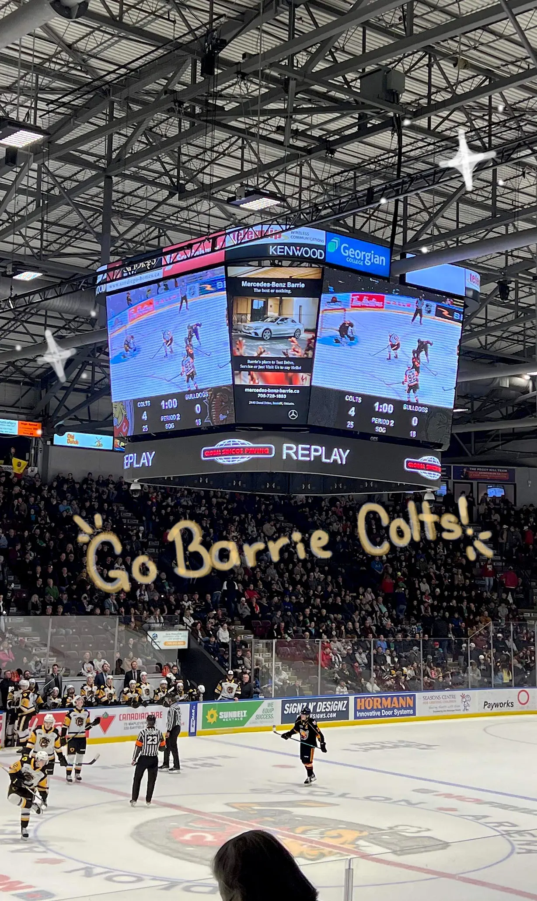
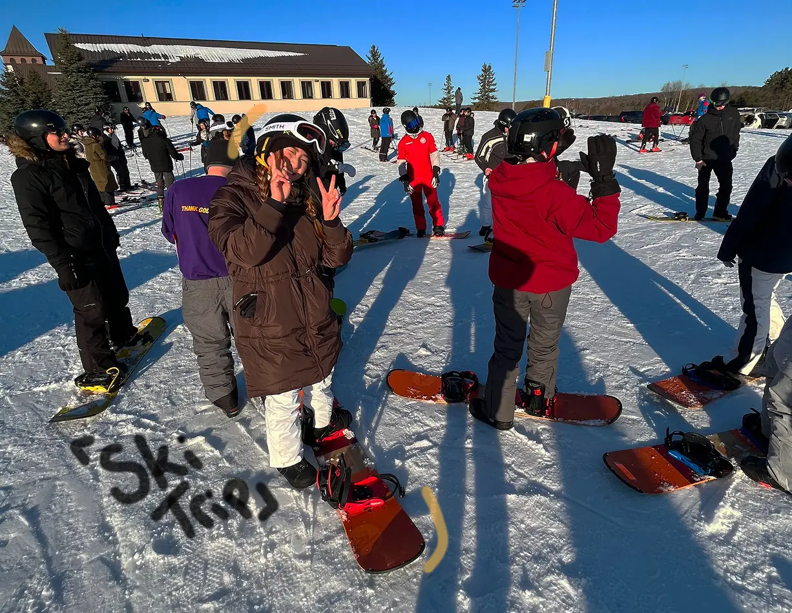
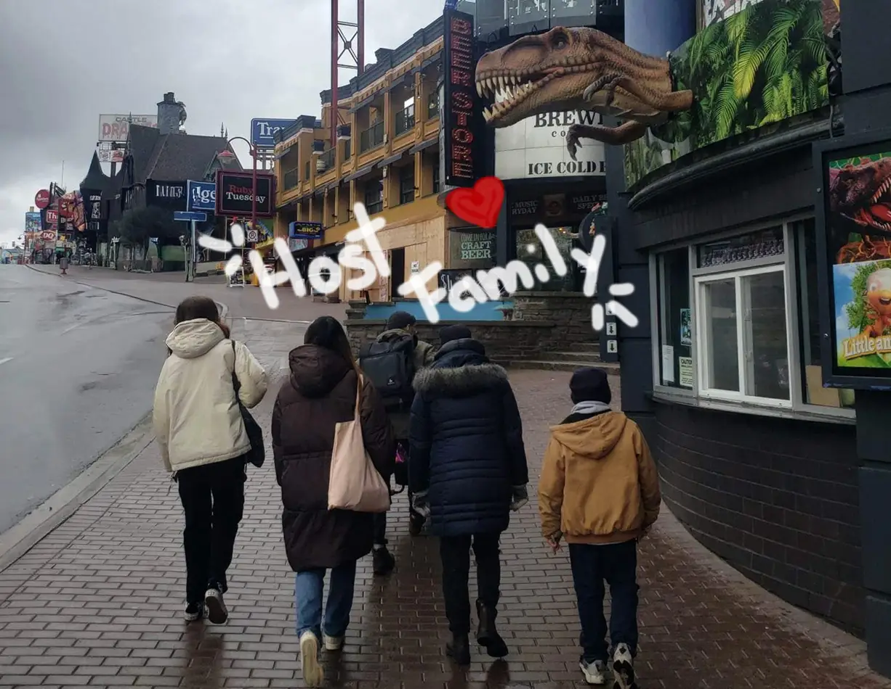

Skolen og hverdagslivet
Fra klasseværelset til de canadiske gader
Skolen i Canada var både anderledes og virkelig spændende at opleve. Timerne var mere afslappede, og der blev lagt stor vægt på samarbejde og diskussion, så alle kunne deltage. Det var sjovt at mærke forskellen fra vores skolesystem derhjemme, men samtidig føltes mange ting genkendelige. Uden for skolen handlede hverdagen om sport, venner og små daglige rutiner – fra at tage bussen til at handle i nærbutikken eller bare mødes med venner efter skole.
Billeder med masser af minder


